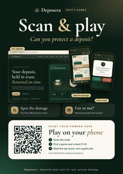
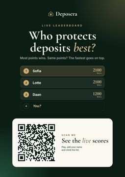
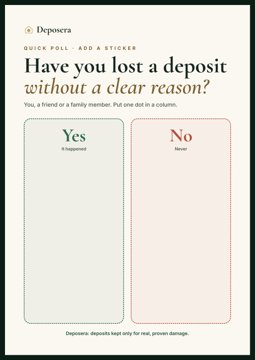
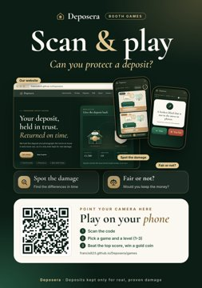
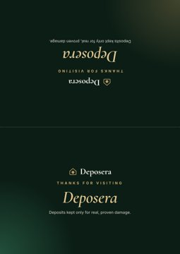
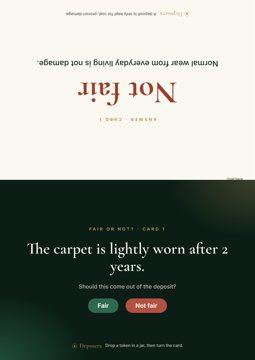
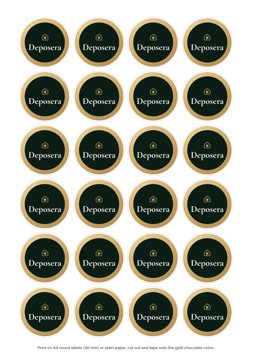
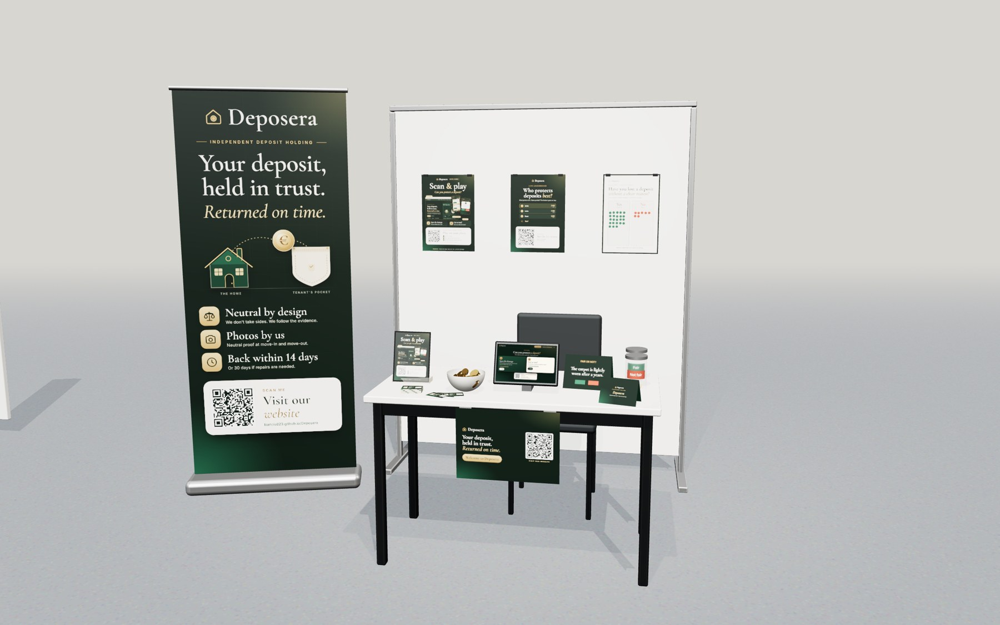

Everything to print except the roll-up banner, which you already have. Files 01–09 are in this pack, in order. A3 items look best at a print shop; at home, print them on A4 with “Fit to page” (they scale down cleanly). Use colour and the highest quality setting.
| # | What · where it goes | Size | Copies | How | |
|---|---|---|---|---|---|
 | 01 | Scan & play poster Hang on the board, left | A3 | 1 | Tape or clip to the board. |
 | 02 | Leaderboard poster Hang on the board, middle | A3 | 1 | QR opens the live scores. |
 | 03 | Poll poster Hang on the board, right | A3 | 1 | Bring dot stickers (green and red). |
| 04 | Desk front sign Tape to the front of the desk | A3 landscape | 1 | Tape along the top edge. | |
 | 05 | Scan & play table sign On the desk, left | A5 | 1 | Stand it in a holder or lean it on something. |
 | 06 | Thank-you tent card On the desk, front right | A4 | 1–2 | Fold in half along the dashed line. |
| 07 | Handout cards On the desk, give to everyone | A4, 2 pages | 3–5 sheets | Double-sided, flip on long edge. Cut on dashed lines (10 per sheet). | |
 | 08 | Fair or not? tent cards On the desk, by the jars | A4, 10 pages | 1 set | Fold each sheet in half. Use 2–3 at a time and swap them. |
 | 09 | Coin stickers On the chocolate coins | A4 | 2 sheets | Round labels (40 mm) or paper + tape. 24 per sheet. |
